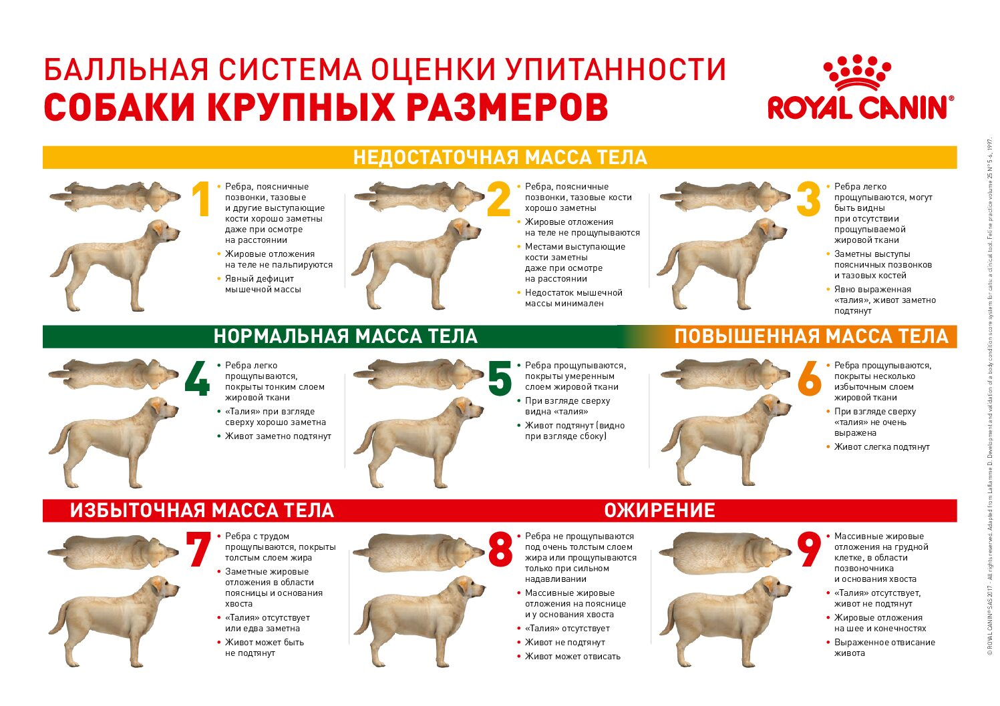
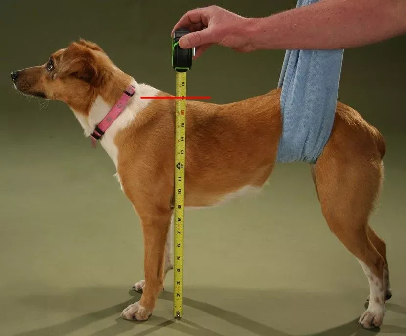
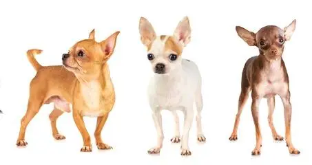
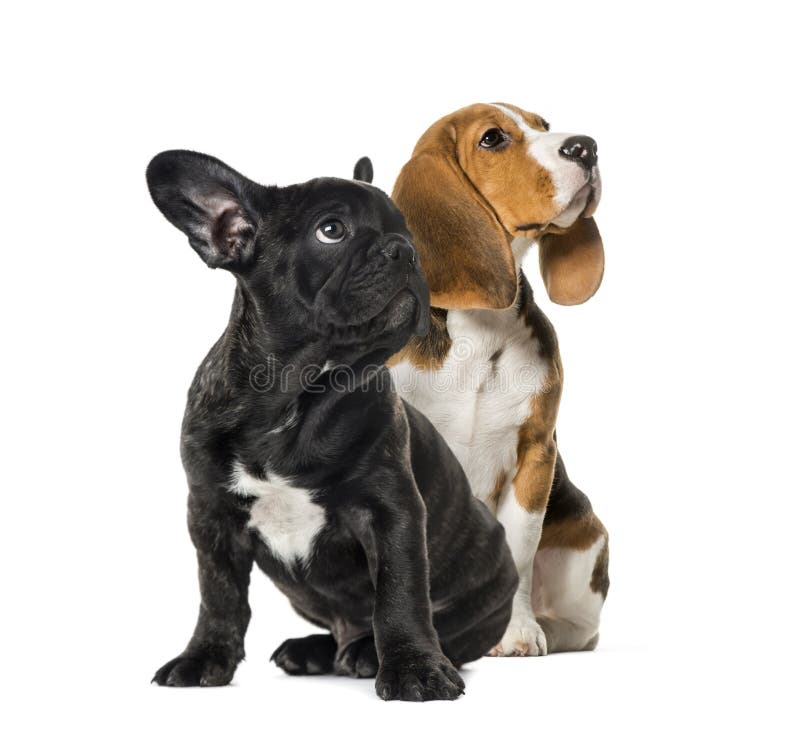
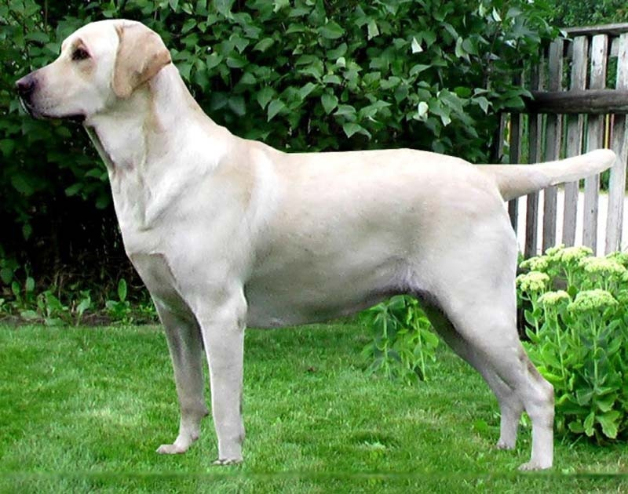
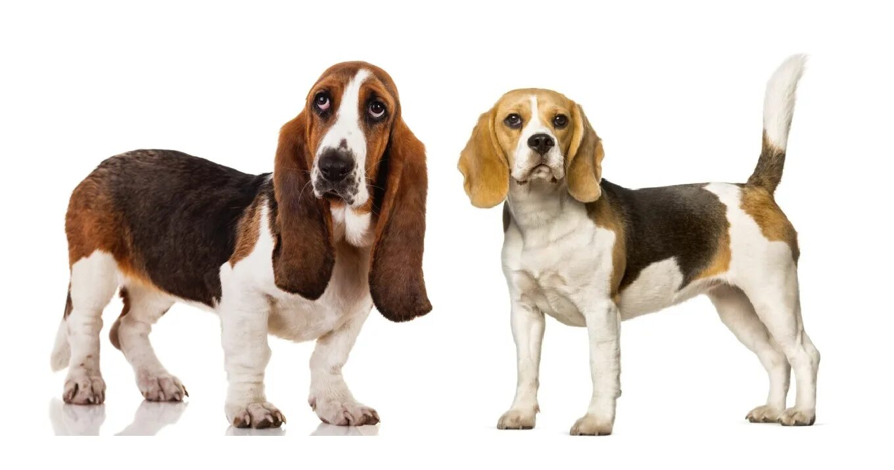
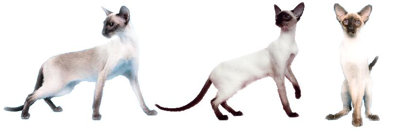
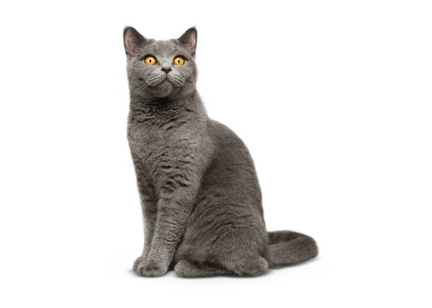
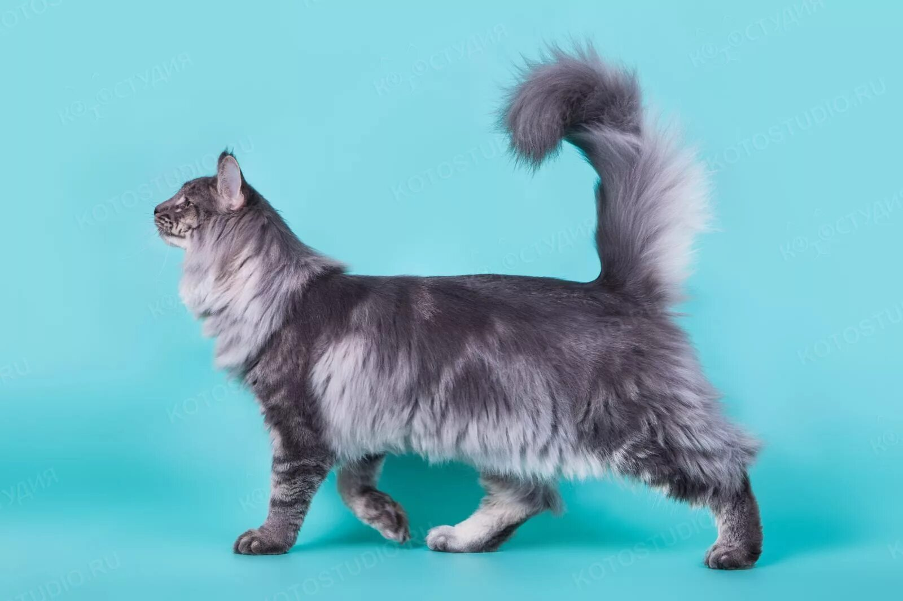
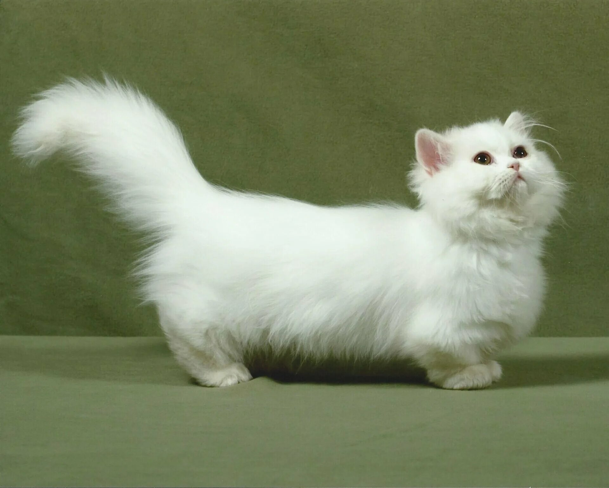

О программе
Всё, что нужно знать о Трекере питомца: как измерять, как считать, как пользоваться.
📌 Разделы
🐾 Что такое Трекер питомца?
Трекер питомца — это удобное веб-приложение, которое помогает владельцам домашних животных следить за здоровьем, весом, событиями и важными датами.
- ✅ Храните анкеты всех питомцев в одном месте
- ✅ Отслеживайте вес и рост на графиках
- ✅ Планируйте вакцинации, визиты к ветеринару, прогулки
- ✅ Получайте автоматические напоминания о днях рождения
- ✅ Рассчитывайте идеальный вес по росту и типу телосложения
- ✅ Экспортируйте и импортируйте данные в JSON
💡 Все данные хранятся локально в вашем браузере. Ничего не отправляется на сервер.
📊 BCS — Body Condition Score
BCS (индекс кондиции тела) — это система оценки упитанности питомца по шкале от 1 до 9.
- 1 — Истощение
- 3 — Недобор веса
- 5 — ✅ Идеальная норма
- 7 — Избыточный вес
- 9 — Сильное ожирение
Как оценить:
- 👉 Рёбра должны прощупываться, но не быть видны
- 👉 Талия выражена при взгляде сверху
- 👉 Живот подтянут при взгляде сбоку

Источник: WSAVA Global Nutrition Guidelines
📏 Как измерить рост питомца
Рост (высота в холке) — это расстояние от пола до самой верхней точки холки, когда питомец стоит ровно на четырёх лапах.
Как измерять:
- 1️⃣ Поставьте питомца на ровную твёрдую поверхность
- 2️⃣ Дождитесь, когда он встанет ровно, голова прямо
- 3️⃣ Найдите холку — самую высокую точку между лопатками
- 4️⃣ Измерьте расстояние от пола до этой точки линейкой или рулеткой

💡 Если не знаете точный рост — нажмите «Не знаю» в анкете, программа подставит среднее значение для выбранного типа телосложения.
🦴 Типы телосложения
Лёгкое — худощавое. Среднее — стандарт. Крупное — массивное. Коротколапое — удлинённое тело на коротких лапах (у собак: такса, корги; у кошек: манчкин, наполеон).
🐕 Для собак
Лёгкое (мелкие породы)
Худощавое, изящное телосложение. Рост: 20–35 см. Вес: 3–8 кг.
Примеры пород: той-терьер, чихуахуа, итальянская борзая, пражец.

Среднее
Классическое квадратное телосложение. Рост: 35–55 см. Вес: 8–25 кг.
Примеры пород: бигль, кокер-спаниель, шелти, французский бульдог.

Крупное
Массивное, мощное телосложение. Рост: 55–75 см. Вес: 25–45 кг.
Примеры пород: лабрадор, немецкая овчарка, хаски, ротвейлер.

Коротколапое (прямоугольное)
Удлинённое тело на коротких лапах. Рост: 15–30 см. Вес: 5–15 кг.
Примеры пород: такса, корги, бассет-хаунд.

🐈 Для кошек
Лёгкое
Изящное, утончённое. Вес: 3–4,5 кг.
Примеры пород: сиамская, ориентальная, абиссинская, бурма.

Среднее
Стандартное, гармоничное. Вес: 4–6 кг.
Примеры пород: британская короткошёрстная, русская голубая.

Крупное
Массивное, мускулистое. Вес: 5–9 кг.
Примеры пород: мейн-кун, норвежская лесная, сибирская, рэгдолл.

Коротколапое
Удлинённое тело на коротких лапах. Вес: 2,5–4,5 кг.
Примеры пород: 🐱 манчкин, наполеон (менуэт).
💡 У коротколапых кошек тело прямоугольной формы, а не квадратной — это важно при оценке упитанности.

💡 Для других видов животных (птицы, грызуны, рептилии) расчёт идеального веса пока не реализован — информация появится в следующих версиях после тестирования на реальных моделях.
📅 Календарь событий
Календарь помогает не пропустить важные даты и события в жизни питомца.
Какие бывают события:
- 💉 Вакцина — напоминание о вакцинации
- 🩺 Ветеринар — плановый или внеплановый визит
- 🚶 Прогулка — регулярные выгулы
- 💊 Лекарства — курс лечения
- 🎂 День рождения — добавляется автоматически
- 📌 Другое — любое событие
Повторяющиеся события:
- 🔁 Можно указать, что событие повторяется каждые N дней / недель / месяцев
- 🔁 Можно задать конечную дату или оставить «бесконечно»
- 🔁 Пример: «Обработка от клещей каждые 4 недели»
Навигация:
- ◀ ▶ — переключение между месяцами
- 🖱️ Клик на день — быстрое добавление события
- 📋 Если событий в дне много — откроется модальное окно со списком
⚖️ Как рассчитывается идеальный вес
Идеальный вес рассчитывается на основе роста и типа телосложения.
Для собак:
- Лёгкое: рост × 0,15 … рост × 0,35
- Среднее: рост × 0,20 … рост × 0,35
- Крупное: рост × 0,25 … рост × 0,50
- Коротколапое: рост × 0,30 … рост × 0,55
Для кошек:
- Лёгкое: рост × 0,12 … рост × 0,18
- Среднее: рост × 0,14 … рост × 0,21
- Крупное: рост × 0,16 … рост × 0,25
- Коротколапое (манчкин, наполеон): рост × 0,18 … рост × 0,28
⚠️ Для щенков и котят до 1 года расчёт не применяется — они растут, и вес оценивается индивидуально у ветеринара.
💡 Если рост не указан — берётся среднее значение для выбранного типа телосложения.